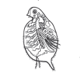

でんぷんがあるかどうかを調べる際に用いる液体は何でしょう？
植物のたねが芽を出すことを何というか？
この実験器具の名前は何でしょう？

この微生物の名前は何でしょう？
土で作った山に溝を付け水を流すと、やがて㋒に土が積もるがこれを水の何という働きによるものでしょうか？
流れる水が地面を削る働きを何というでしょう？
川の下流の様子で川の流れが変わり、川の水によって運ばれてきた土や砂が三角形に堆積した地形を何というでしょう？
だんだんと大きく高くなり、雷を伴った激しい雨を降らせる事がある雲は？
食塩水のように、ものが水に溶けて透明になった液を何というでしょう？
水の入ったビーカーに食塩を入れてかき混ぜたら、溶け残りが出た。水の温度を変えずに食塩を全部溶かすにはどうしたらいいでしょうか？